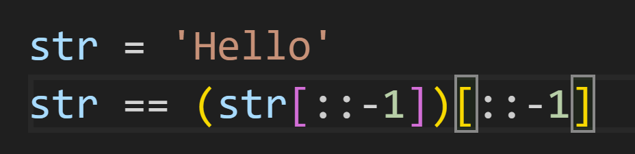

There are many different reasons why people choose to study Computer Science. Some of which include the ever-expanding job market, the high-paying jobs, or the flexibility to be able to work anywhere (as long as you have a computer). While yes, those are some of the reasons I chose to study Computer Science, those do not include the two biggest reasons. As a child growing up in this new technological age, I received invaluable knowledge and assistance through various programs and websites. So much more of my life ran smoother and more efficiently than I had realized. Things that were not previously possible were becoming a reality due to advancements in technology. To help continue to build and develop the programs and websites that make our lives so much more fruitful and efficient was an opportunity I could not pass up. The second reason I chose to study Computer Science was my desire to use my problem-solving and creativity skills. I have always had a passion for mathematics, partly because there are many different ways to correctly solve a problem. I discovered that coding is very similar, in that the way you can achieve a task can be so different from how someone else does it. This ability to freely think and solve lights a fire in me that will sustain throughout my career as a software developer.

Two different ways to display "Hello"
Personal Hobbies and Interests
There are a variety of things that I do to stay entertained. Below are some things I get enjoyment out of:
Sports: I played soccer and Ice Hockey throughout most of my life. I am an avid NFL and NBA fan. My two teams are the Cleveland Cavaliers and Cleveland Browns.
Pets: My family has two dogs, named Shep and Oscar, that I love taking on walks and playing with outside.
Cooking: As a college student living in a dorm, I don't get to cook much. However, my summer job the past three years has been a cook at a restaurant. I love to experiment with new recipes at home, especially ones that involve seafood.
Travel: I don't get to travel much, but when I do, I have a blast. Some cool places I have visited in recent years are Los Angeles, Grand Teton National Park, and Toronto.